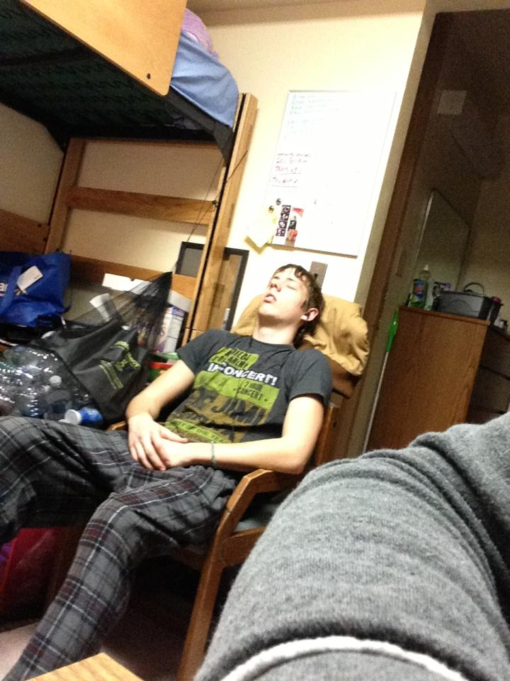
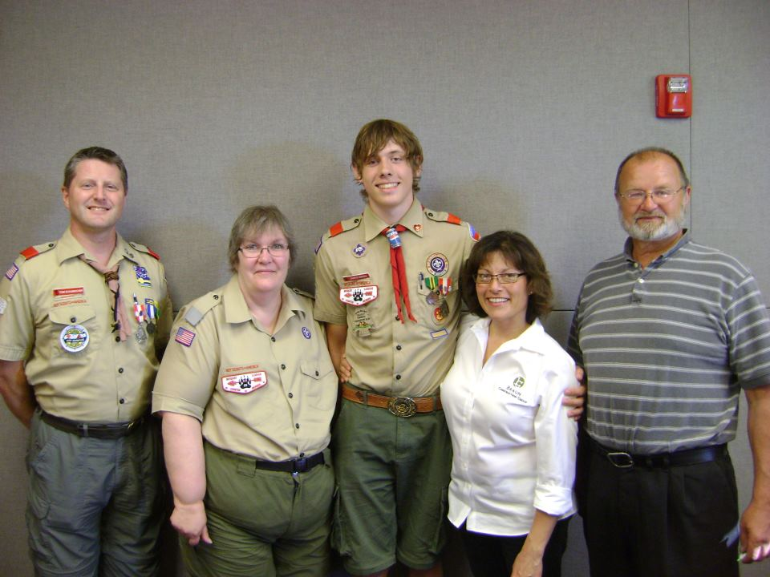
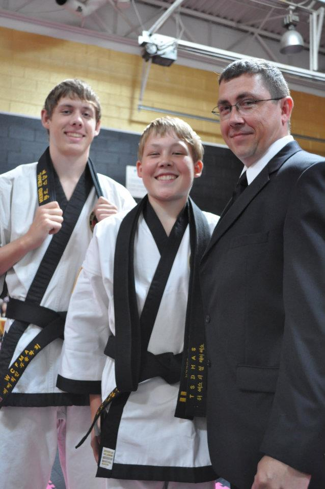

Hi there, I'm James Green and I'm a sophmore in Computer Science at MSU. There is a whole lot about me that I could share with you. So this page might have quite some scrolling. One of the things I enjoy is my collection of hardware shown below.
 At MSU I'm currently enrolled in all technical classes so there are days where I can't help but to want to tear my hair out. Most days though are a lot of fun. I really enjoy all of my programming classes, I would average a 3.5 GPA if you only looked at my CSE courses! Outside of the classroom I am involved with both the ACM and WIC Executive boards because I am the ACM baord member responsible for keeping in contact with the WIC girls. When I'm not in class or a meeting, I'm usually hanging with a small group of friends. More times than not, I find myself drifting off to sleep among their conversations
Before I came to MSU, I had a busy life. A few highlights of my early years are listed below. Something that happened kind of by surprise only a few months before I left for college was meeting the girl who would steal my heart. You might thinks it's cheesy but my love for her has only grown since the day I first told her how I felt.
I graduated from Farmington High School in 2012 with a 3.8 GPA, highschool was all fun and games for me, I wrestled and always joked around with friends in class. I was able to keep up some good grades (even in AP classes) without really having to study or do homework outside of school. All those habits changed when I left for college...
 During my senior year of high school, I was able to earn the rank of Eagle Scout in the Boyscouts of America. I cherish every moment I have of scouting. From learning the ropes to teaching them to the younger ones. From lacing up my first pair of hiking boots to summiting more than a dozen summits all across the United States.
 I trained in Martial Arts since I was in the third grade. I've fought my way to earn my second degree Black Belt. When I'm home I train with the World Class Institute of Martial Arts in Livonia MI. Now that I'm at MSU I try to train with the MSU Mixed Martial Arts club at least once a week and I took a course in Tae Kwon Do. I really enjoy all the aspects of training, not just the obvious physical benefits but the mental and spiritual ones as well.